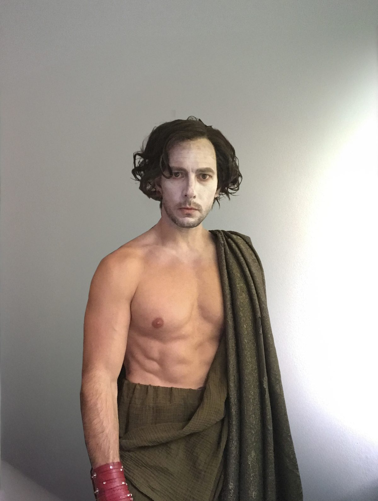

Gallery & Media
A Performance
Worth Seeing
Stage photographs and live performance recordings. Hear Derek before planning your event.
Photography
Moments from the stage.



Video
Watch Derek perform.

Treveris Dance Festival · Watch directly on YouTube if the player is unavailable.
Concert duet · Porta Nigra, Trier · Open the video file if playback is unavailable.
About the concert recording
Derek and a soprano sing Time to Say Goodbye on an outdoor stage at Porta Nigra in Trier, with orchestral accompaniment. The recording is a live concert excerpt with amplified singing. It illustrates Derek’s voice and duet work; it is not a recording of a corporate booking.
Solo Opera Lux event performances use recorded orchestral backing. A soprano can be requested for selected duets, subject to availability.
Follow Along
Behind the scenes & live clips
Performances, rehearsals, and clips from recent evenings across Germany and Luxembourg. If you want to know what a night with Derek actually looks like, start here.
@operaluxeventsCheck availability